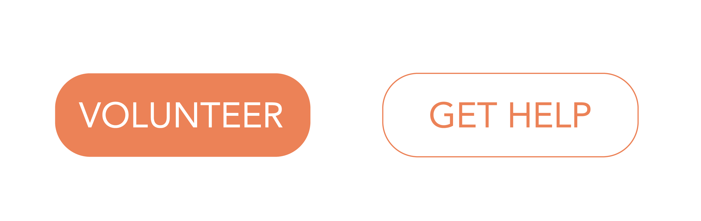

Solution
Style Tile and CTA.

For my site, I decided to make two different CTA buttons. This allowed me to seperate my audience into people who would like to volunteer and people who need the resources that are available. While I do think that my "Get Help" button is important, I think most people who are coming to the site are looking to volunteer or donate, so I made the "Volunteer" button to hold more emphasis so it would be where viewers eyes are drawn to. The Get Help button is still important but not as many people will be looking for it, so giving it less emphasis was very important.